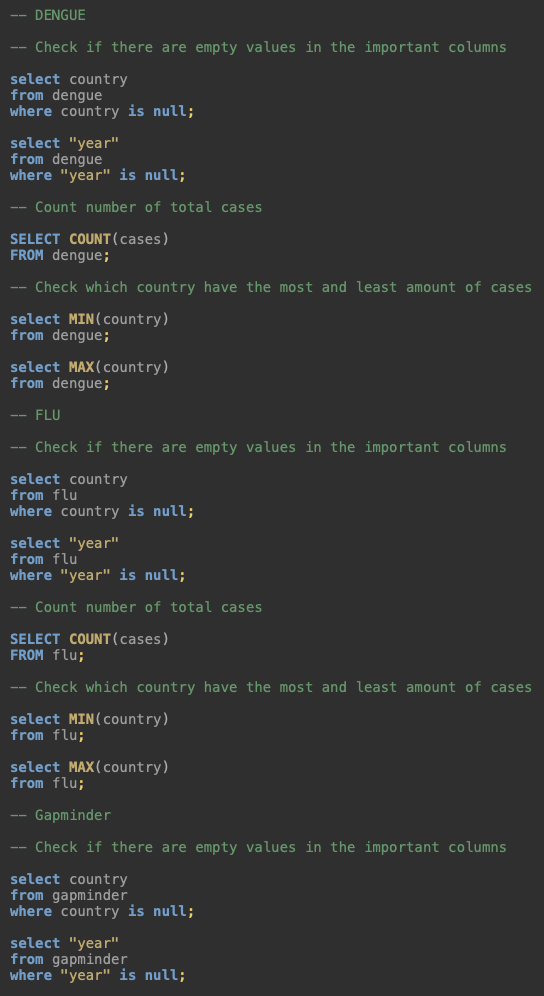
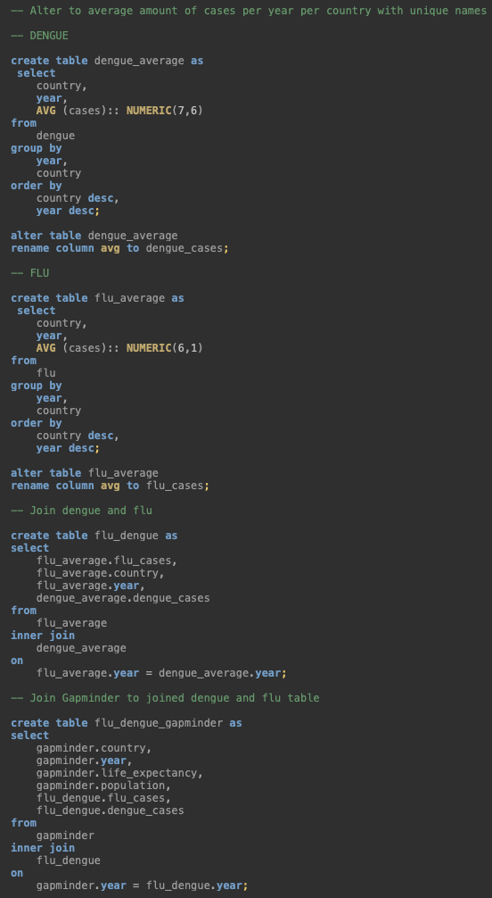

5 Relational data and databases
Introduction
This assignment was focused on learning the basics of the SQL language and how to work this around relational data and databases. These are collections of information stored in separate tables with underlying relations to create an easy overview of relations between different data structures.
DBeaver connection
I start by creating three data frames out of files and making them tidy.
# The flu
## Import, first 11 lines are metadata
flu_df <- read_csv("files/flu_data.csv", skip = 11)
## Make tidy
flu_df_tidy <- flu_df %>% pivot_longer(cols = c(2:ncol(flu_df)), names_to = 'country', values_to = 'cases') %>% na.omit()
# Dengue
## Import, first 11 lines are metadata
dengue_df <- read_csv("files/dengue_data.csv", skip = 11)
## Make tidy
dengue_df_tidy <- dengue_df %>% pivot_longer(cols = c(2:ncol(dengue_df)), names_to = 'country', values_to = 'cases') %>% na.omit()
# Gapminder
## The dataframe is part of the dslabs package and therefore does not need to be imported.
## The dataframe is already tidy.An important part of relational data is enabling comparison across different data frames. In this case we will be looking at the country and date, but in the data frames we use there are a couple of things that needs to be adjusted to make them similar.
# Column 'country'
## Check types.
multi_check(flu_df_tidy$country, dengue_df_tidy$country, gapminder$country) # character, character, factor
## Change all types into factor
flu_df_tidy$country <- as.factor(flu_df_tidy$country)
dengue_df_tidy$country <- as.factor(dengue_df_tidy$country)
# Column 'date'
## Check types.
multi_check(flu_df_tidy$Date, dengue_df_tidy$Date, gapminder$year)
## Because flu and dengue are specified to day instead of the year at gapminder, a 'year' column needs to be added and changed into the integer type to create similarity.
flu_df_tidy <- flu_df_tidy %>% mutate(year = substr(flu_df_tidy$Date, start=1, stop=4))
dengue_df_tidy <- dengue_df_tidy %>% mutate(year = substr(dengue_df_tidy$Date, start=1, stop=4))
## Change all types into integer
flu_df_tidy$year <- as.integer(flu_df_tidy$year)
dengue_df_tidy$year <- as.integer(dengue_df_tidy$year)The data frames are now similar and can be stored into csv and rds files.
# Export data frames as csv and rds
save_to_csv_rds(flu_df_tidy, "files/flu")
save_to_csv_rds(dengue_df_tidy, "files/dengue")
save_to_csv_rds(gapminder, "files/gapminder")DBeaver and R were connected (my real password is hidden) and the tables were inserted into the ‘workflowsdb’ database in DBeaver for inspection.
con <- dbConnect(RPostgres::Postgres(),
dbname = "workflowsdb",
host="localhost",
port="5432",
user="postgres",
password="Password") # Hide my real passworddbWriteTable(con, "gapminder", gapminder)
dbWriteTable(con, "flu", flu_df_tidy)
dbWriteTable(con, "dengue", dengue_df_tidy)Inspection
Now that the tables are imported, I checked a couple of things. Dengue has no “NULL” variables in country and year, 6263 cases in the data set and the average amount of cases is 0.14 with a standard deviation of 0.14. The country with the least amount of cases is Argentina with 0 cases and the country with the most is Venezuela with 1 case.
The flu has no “NULL variables in country and year, 17266 cases in the data set and the average amount of cases is 473.74 with a standard deviation of 768.95. The country with the least amount of cases is Argentina with 0 cases and the country with the most is Uruguay 10555 cases.
Gapminder had no “NULL” variables in country and year.
There was an important thing that stood out to me about the metadata. I will discuss this later in this chapter. This information is obtained by the following SQL and R code:

Figure 6: SQL code of data inspection.
# Dengue
mima(dengue_df_tidy$cases) # 0, 1## $min
## [1] 0
##
## $max
## [1] 1mean_sd(dengue_df_tidy$cases) # 0.14, 0.14## $mean
## [1] 0.1389711
##
## $sd
## [1] 0.1389235# Flu
mima(flu_df_tidy$cases) # 0, 10555## $min
## [1] 0
##
## $max
## [1] 10555mean_sd(flu_df_tidy$cases) # 473.74, 768.95## $mean
## [1] 473.7355
##
## $sd
## [1] 768.9549For a good analysis of the different, but related data, they need to be joined together in one table with the important columns. I created four joined tables, flu with dengue, dengue with gapminder, flu with gapminder and all three of them. Some tables have more countries than others, this is because the joining only joins the matching countries. See below for the SQL and R code.

Figure 7: SQL code of inner-join.
# Load joined table to object
gapminder_flu <- read_csv("files/gapminder_flu.csv")
gapminder_dengue <- read_csv("files/gapminder_dengue.csv")
flu_dengue <- read_csv("files/flu_dengue.csv")
gapminder_flu_dengue <- read_csv("files/gapminder_flu_dengue.csv")As said before, there was something important that stood out to me, the dataset missed metadata. The cases columns didn’t specify how it was measured, and this was also not written down in the metadata. This resulted in unreliable data that doesn’t take into account that countries have different populations, just a count of cases isn’t enough. Therefore a normalisation was necessary. I divided the cases by the population from the gapminder data and multiplied this by 100000, which seemed like a logical amount when calculating with populations. I added the results to the tables.
gapminder_flu <- gapminder_flu %>% mutate("cases_per_100000" =gapminder_flu$flu_cases/gapminder_flu$population*100000)
gapminder_dengue <- gapminder_dengue %>% mutate("cases_per_100000" =gapminder_dengue$dengue_cases/gapminder_dengue$population*100000)Descriptive statistics
Now that the sets are normalised, descriptives can start. Starting by calculating the means and standard deviations of cases per country with the updated data.
After performing the Shapiro-Wilk test, the flu seems to have 8 non normal distributed variables from a total of 29, and dengue has 5 non normal distributed variables from a total of 10. As an extra test, the Levene’s test shows that the flu doesn’t have a variance of equility between countries.
Because of these two specifics, a Kruskal-Wallis test was chosen, because this test doesn’t account for normality. The results of this test shows that both datasets have a p-value of < 2.2e-16 which tells us that there is a significance difference.
To determine the differences between variables, the Dunn test was performed as a post hoc test. The results of those are stored in separate tables of difference and no difference, but in total 114 from a total of 406 combinations of the flu show differences and 19 from a total of 45 combinations of dengue show differences.
# Obtain mean and standard deviation per country
flu_sum <- gapminder_flu %>%
group_by(country)%>%
summarize(avg_population = round(mean(population), 0),
sd_population = round(sd(population), 0),
avg_cases_per_100000 = mean(cases_per_100000),
sd_cases_per_100000 = sd(cases_per_100000))
dengue_sum <- gapminder_dengue %>%
group_by(country)%>%
summarize(avg_population = round(mean(population), 0),
sd_population = round(sd(population), 0),
avg_cases_per_100000 = mean(cases_per_100000),
sd_cases_per_100000 = sd(cases_per_100000))
# To check the normality, dataframes are made with the countries
flu_country <- gapminder_flu %>%
select(country, cases_per_100000, year) %>%
pivot_wider(names_from = country,
values_from = cases_per_100000) %>%
filter(year != 2002)
dengue_country <- gapminder_dengue %>%
select(country, cases_per_100000, year) %>%
pivot_wider(names_from = country,
values_from = cases_per_100000) %>%
filter(year != 2002)
# Shapiro wilk
## Flu
flu_stats <- data.frame(country = colnames(flu_country[,2:length(colnames(flu_country))]),
pvalue_shap = round(c(shapiro.test(flu_country$Uruguay)$p.value,
shapiro.test(flu_country$`United States`)$p.value,
shapiro.test(flu_country$Ukraine)$p.value,
shapiro.test(flu_country$Switzerland)$p.value, shapiro.test(flu_country$Sweden)$p.value,
shapiro.test(flu_country$Spain)$p.value,
shapiro.test(flu_country$`South Africa`)$p.value,
shapiro.test(flu_country$Russia)$p.value,
shapiro.test(flu_country$Romania)$p.value,
shapiro.test(flu_country$Poland)$p.value,
shapiro.test(flu_country$Peru)$p.value,
shapiro.test(flu_country$Paraguay)$p.value, shapiro.test(flu_country$Norway)$p.value,
shapiro.test(flu_country$`New Zealand`)$p.value,
shapiro.test(flu_country$Netherlands)$p.value,
shapiro.test(flu_country$Mexico)$p.value,
shapiro.test(flu_country$Japan)$p.value,
shapiro.test(flu_country$Hungary)$p.value,
shapiro.test(flu_country$Germany)$p.value,
shapiro.test(flu_country$France)$p.value, shapiro.test(flu_country$Chile)$p.value,
shapiro.test(flu_country$Canada)$p.value,
shapiro.test(flu_country$Bulgaria)$p.value,
shapiro.test(flu_country$Brazil)$p.value,
shapiro.test(flu_country$Bolivia)$p.value,
shapiro.test(flu_country$Belgium)$p.value,
shapiro.test(flu_country$Austria)$p.value,
shapiro.test(flu_country$Australia)$p.value,
shapiro.test(flu_country$Argentina)$p.value), 4))
## Dengue
dengue_stats <- data.frame(country = colnames(dengue_country[,2:length(colnames(dengue_country))]),
pvalue_shap = round(c(shapiro.test(dengue_country$Venezuela)$p.value, shapiro.test(dengue_country$Thailand)$p.value,
shapiro.test(dengue_country$Singapore)$p.value,
shapiro.test(dengue_country$Philippines)$p.value,
shapiro.test(dengue_country$Mexico)$p.value,
shapiro.test(dengue_country$Indonesia)$p.value,
shapiro.test(dengue_country$India)$p.value,
shapiro.test(dengue_country$Brazil)$p.value,
shapiro.test(dengue_country$Bolivia)$p.value,
shapiro.test(dengue_country$Argentina)$p.value), 4))
# Normality check
flu_stats <- flu_stats %>% mutate(normal_dis = pvalue_shap>0.05)
# 3 out of 5 are normally distributed
dengue_stats <- dengue_stats %>% mutate(normal_dis = pvalue_shap>0.05)
# 21 out of 29 are normally distributed
# Levene test
leveneTest(cases_per_100000 ~ country, data = gapminder_flu) # <2.2e-16## Levene's Test for Homogeneity of Variance (center = median)
## Df F value Pr(>F)
## group 28 12.482 < 2.2e-16 ***
## 330
## ---
## Signif. codes: 0 '***' 0.001 '**' 0.01 '*' 0.05 '.' 0.1 ' ' 1leveneTest(cases_per_100000 ~ country, data = gapminder_dengue) # 3.228e-07## Levene's Test for Homogeneity of Variance (center = median)
## Df F value Pr(>F)
## group 9 6.2485 3.288e-07 ***
## 120
## ---
## Signif. codes: 0 '***' 0.001 '**' 0.01 '*' 0.05 '.' 0.1 ' ' 1# Kruskal Wallis test
kruskal.test(cases_per_100000 ~ country, data = gapminder_flu) # p-value < 2.2e-16##
## Kruskal-Wallis rank sum test
##
## data: cases_per_100000 by country
## Kruskal-Wallis chi-squared = 332.13, df = 28, p-value < 2.2e-16kruskal.test(cases_per_100000 ~ country, data = gapminder_dengue) # p-value < 2.2e-16##
## Kruskal-Wallis rank sum test
##
## data: cases_per_100000 by country
## Kruskal-Wallis chi-squared = 110.54, df = 9, p-value < 2.2e-16# P-value of basically .0000, there is a statistically significant difference
# Dunn post-hoc test
dengue_dunn <- dunnTest(cases_per_100000 ~ country,
data = gapminder_dengue, method = "holm")$res
flu_dunn <- dunnTest(cases_per_100000 ~ country,
data = gapminder_flu, method = "holm")$res
# Check for significant differences
dengue_dunn <- dengue_dunn %>% mutate(different = P.adj<0.05)
flu_dunn <- flu_dunn %>% mutate(different = P.adj<0.05)
# Note the significant differences between countries/continents
dengue_dunn_diff <- dengue_dunn %>% filter(different == TRUE)
flu_dunn_diff <- flu_dunn %>% filter(different == TRUE)
# Note the comparable countries/continents
dengue_dunn_non <- dengue_dunn %>% filter(different == FALSE)
flu_dunn_non <- flu_dunn %>% filter(different == FALSE)Visualisations
According to the dataset en information in this assignment, two graphs per disease were made to showcase the data.
Flu
gapminder_flu %>%
ggplot(aes(x=continent,y=cases_per_100000, group=continent, fill=continent)) +
geom_col(stat="identity")+
labs(title = "Flu cases per continent",
x="Continent",
y="Flu cases per 100000 residents") +
theme(legend.position = "right", text = element_text(size=10))
Figure 8: Bargraph of the amount of flu cases per continent.
ggplot(flu_dengue, aes(x=year, y=flu_cases, group = country, color = country)) +
geom_point() +
geom_line() +
labs(title = "Flu cases",
x = "Year",
y = "Average dengue cases per year") +
theme(legend.position = "right", text = element_text(size=10))
Figure 9: Linegraph of average flu cases per year per country.
Dengue
gapminder_dengue %>%
ggplot(aes(x=continent,y=cases_per_100000, group=continent, fill=continent)) +
geom_col(stat="identity")+
labs(title = "Dengue cases per continent",
x="Continent",
y="Dengue cases per 100000 residents") +
theme(legend.position = "right", text = element_text(size=10))
Figure 10: Bargraph of the amount of dengue cases per continent
ggplot(flu_dengue, aes(x=year, y=dengue_cases, group = country, color = country)) +
geom_point() +
geom_line() +
labs(title = "Dengue cases",
x = "Year",
y = "Average dengue cases per year") +
theme(legend.position = "right", text = element_text(size=10))
Figure 11: Linegraph of average dengue cases per year per country.